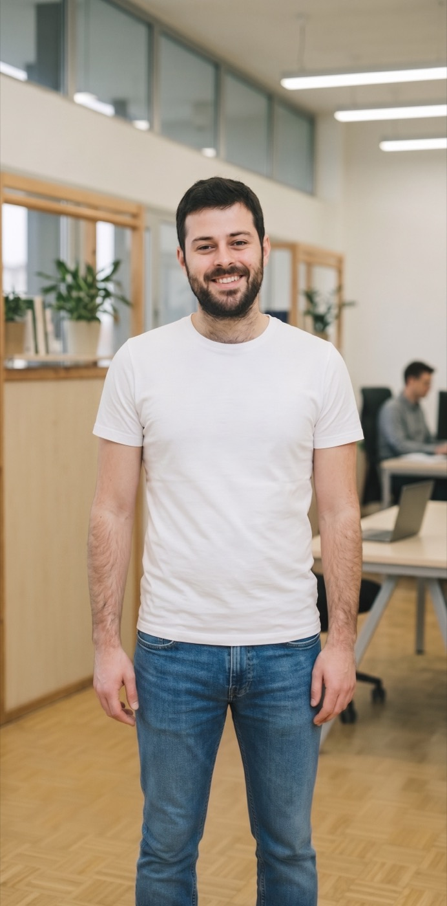

משמעות בעבודה
חקירת מקורות המשמעות של האדם והקשר לעשייה מקצועית.
סדנאות משמעות ורוח במקומות העבודה
מרחב לחשיבה על משמעות, זהות ותכלית בעולם עבודה המשתנה במהירות.
להזמנת סדנאארגונים רבים משקיעים ברווחה, בהכשרות ובפיתוח מקצועי. אך לצד האתגרים המקצועיים מתעוררות גם שאלות אנושיות עמוקות יותר:
חקירת מקורות המשמעות של האדם והקשר לעשייה מקצועית.
כלים ותובנות להתמודדות עם אי-ודאות ושחיקה.
עיסוק בזהות אישית, קהילתית וישראלית.
מפגש עם פילוסופיה, פסיכולוגיה ומקורות יהודיים-ישראליים.
הסדנאות מבוססות על מסורת ארוכה של עיסוק בשאלות החיים הגדולות, ומשלבות בין:

השאירו פרטים ונחזור אליכם לתיאום שיחת היכרות קצרה.
⚠ יעדי הקישורים ברשתות ובפרטי הקשר טרם נמסרו